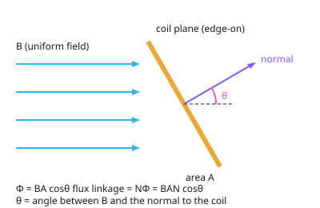

A-level Physics Year 13 · Topic 32
Electromagnetic induction and transformers
Electromagnetic induction and transformers explains how changing magnetic fields generate electricity.
We will define magnetic flux and flux linkage, and use Faraday's law and Lenz's law.
Then we study generators and alternating current, r m s values, transformers and the National Grid, and investigate induction in the lab.
- 6 subtopics
- 240 questions
- Free: 32.1 notes and 10 questions
In this topic
- 32.1Magnetic flux and flux linkageFree below · 17 questions
- 32.2Faraday's law and Lenz's lawOpen in Full Marks · 22 questions
- 32.3Generators and alternating voltagesOpen in Full Marks · 16 questions
- 32.4Peak, mean and r.m.s. values of alternating current and voltageOpen in Full Marks · 63 questions
- 32.5Transformers and power transmissionOpen in Full Marks · 61 questions
- 32.6Practical: investigating electromagnetic induction with coils and magnetsOpen in Full Marks · 61 questions
32.1 · Free notes
Magnetic flux and flux linkage

Key points
- Magnetic flux density B is the force per unit length on a conductor carrying 1 A perpendicular to the field. Its unit is the tesla (T = N A⁻¹ m⁻¹ = Wb m⁻²), and B is also the flux per unit area normal to the field.
- Magnetic flux through a flat area is Φ = BA cosθ. θ is the angle between B and the normal to the surface, not the angle between B and the surface.
- The unit of flux is the weber (Wb). 1 Wb is the flux when a field of 1 T passes normally through an area of 1 m², so Wb = T m² = V s.
- Flux is a maximum (Φ = BA) when the field is perpendicular to the plane of the coil (θ = 0). It is zero when the field lines are parallel to the plane of the coil (θ = 90°).
- If the question gives the angle φ between B and the plane of the coil, use Φ = BA sinφ. Always check which angle you have been given.
- Flux linkage for a coil of N turns is NΦ = BAN cosθ. Its unit is the weber turn (Wb turns), often written simply as Wb.
- Flux linkage counts every turn of the coil. Doubling the turns doubles the flux linkage, but the flux through each turn is unchanged.
- For a coil rotating in a uniform field, NΦ varies as cosθ. It is a maximum when the plane is perpendicular to B and zero when the plane is parallel to B. A graph of NΦ against cosθ is a straight line through the origin with gradient BAN.
- Flux is a useful picture of field lines passing through an area: more lines through the area means more flux. It is a scalar quantity, but its sign depends on which side of the surface is taken as positive.
- Practical: a search coil with an oscilloscope or data logger can compare field strengths. The induced emf is proportional to the rate of change of NΦ. A Hall probe measures B directly, and B is read from the probe's calibrated output.
- In calculations convert area to m² (cm² × 10⁻⁴) and, for a circular coil, use A = πr². Give the unit Wb for flux and Wb turns for flux linkage.
In more detail
- Worked flux: B = 0.20 T through a 5.0 cm × 4.0 cm coil (A = 2.0 × 10⁻³ m²) → Φ = 4.0 × 10⁻⁴ Wb; with 100 turns, NΦ = 0.040 Wb turns.
- Worked angle: with the coil's normal at 60° to B, Φ = BA cos 60° = 2.0 × 10⁻⁴ Wb.
- Worked circular coil: radius 3.0 cm → A = π × 0.030² = 2.8 × 10⁻³ m²; in 0.050 T with 200 turns, NΦ = 0.028 Wb turns.
- Plane or normal: if the angle is measured to the plane of the coil use sin; if to the normal use cos. The flux is zero when the field lies in the coil's plane.
Practice
Magnetic flux and flux linkage: 10 questions
Pick an answer to check it, or open the answer for the explanation.
1. A square coil of area 4.0 × 10⁻³ m² has its plane perpendicular to a uniform field of 0.25 T. What is the magnetic flux through it?
- 62.5 Wb
- 1.0 × 10⁻³ Wb
- 0 Wb
- 4.0 × 10⁻³ Wb
Show answer
B: 1.0 × 10⁻³ Wb. The normal is parallel to B so θ = 0. Φ = BA = 0.25 × 4.0 × 10⁻³ = 1.0 × 10⁻³ Wb.
2. A coil of 200 turns and area 5.0 × 10⁻⁴ m² is in a 0.12 T field. Its normal makes 60° with the field. What is the flux linkage?
- 3.0 × 10⁻⁵ Wb turns
- 1.2 × 10⁻² Wb turns
- 1.0 × 10⁻² Wb turns
- 6.0 × 10⁻³ Wb turns
Show answer
D: 6.0 × 10⁻³ Wb turns. NΦ = BAN cosθ = 0.12 × 5.0 × 10⁻⁴ × 200 × cos60° = 6.0 × 10⁻³ Wb turns. Using sin60° gives 1.0 × 10⁻², which is wrong.
3. The plane of a coil makes an angle of 30° with a uniform field of 0.80 T. The coil area is 0.020 m². What is the flux through it?
- 8.0 × 10⁻³ Wb
- 1.4 × 10⁻² Wb
- 1.6 × 10⁻² Wb
- 0 Wb
Show answer
A: 8.0 × 10⁻³ Wb. The angle to the normal is 60°. Φ = BA cos60° = 0.80 × 0.020 × 0.5 = 8.0 × 10⁻³ Wb. Using cos30° is the common error.
4. Which statement about magnetic flux through a flat coil is correct?
- It is zero when the field is parallel to the plane of the coil
- It does not depend on the area of the coil
- It is zero when the field is perpendicular to the plane of the coil
- It is greatest when the plane of the coil is parallel to the field
Show answer
A: It is zero when the field is parallel to the plane of the coil. Parallel to the plane means the normal is at 90° to B, so cos90° = 0 and no field lines pass through the area.
5. A coil's turns are doubled and its area halved, in the same perpendicular field. How does the flux linkage change?
- It doubles
- It halves
- It quadruples
- It is unchanged
Show answer
D: It is unchanged. NΦ = BAN. N → 2N and A → A/2 leaves the product AN, and so the flux linkage, unchanged.
6. What is meant by a magnetic flux density of 1 T?
- 1 Wb of flux passes normally through each 1 m² of area
- 1 Wb turn links a coil of area 1 m²
- A force of 1 N acts on any 1 m of wire in the field
- 1 Wb of flux passes through a one-turn coil of any area
Show answer
A: 1 Wb of flux passes normally through each 1 m² of area. B = Φ/A, so 1 T is 1 Wb of flux per square metre of area normal to the field. The force definition needs a 1 A current perpendicular to B.
7. A 150-turn coil has flux linkage 3.6 × 10⁻² Wb turns in a perpendicular field of 0.40 T. What is the coil's area?
- 6.0 × 10⁻⁴ m²
- 3.6 × 10⁻² m²
- 9.0 × 10⁻² m²
- 2.4 × 10⁻³ m²
Show answer
A: 6.0 × 10⁻⁴ m². A = NΦ/(BN) = 3.6 × 10⁻² / (0.40 × 150) = 6.0 × 10⁻⁴ m². Remember to divide by the number of turns.
8. A coil is rotated from a position where its normal is parallel to B to a position 90° from B. What happens to its flux linkage?
- It rises from zero to a maximum
- It falls from a maximum to a negative value
- It falls from a maximum to zero
- It stays constant
Show answer
C: It falls from a maximum to zero. NΦ = BAN cosθ. It goes from BAN at θ = 0 to zero at θ = 90°. It only becomes negative beyond 90°.
9. A coil rotates in a uniform field. A graph of flux linkage NΦ (y-axis) against cosθ (x-axis) is…
- a straight line through the origin, gradient BA
- a straight line through the origin, gradient BAN
- a straight line with gradient N/BA
- a sine curve of amplitude BAN
Show answer
B: a straight line through the origin, gradient BAN. NΦ = (BAN) cosθ has the form y = mx. The graph is a straight line through the origin with gradient BAN.
10. A single circular loop of radius 2.0 cm is perpendicular to a 0.050 T field. What is the flux through it?
- 2.5 × 10⁻⁴ Wb
- 1.3 × 10⁻³ Wb
- 3.1 × 10⁻³ Wb
- 6.3 × 10⁻⁵ Wb
Show answer
D: 6.3 × 10⁻⁵ Wb. A = πr² = π(0.020)² = 1.26 × 10⁻³ m². Φ = BA = 0.050 × 1.26 × 10⁻³ = 6.3 × 10⁻⁵ Wb.
Keep going in Full Marks
Full Marks has 17 questions on Magnetic flux and flux linkage (7 more than here), set out in practice levels. You also get notes and 3D models for all 6 subtopics of Electromagnetic induction and transformers, plus games, timed exams and past papers.